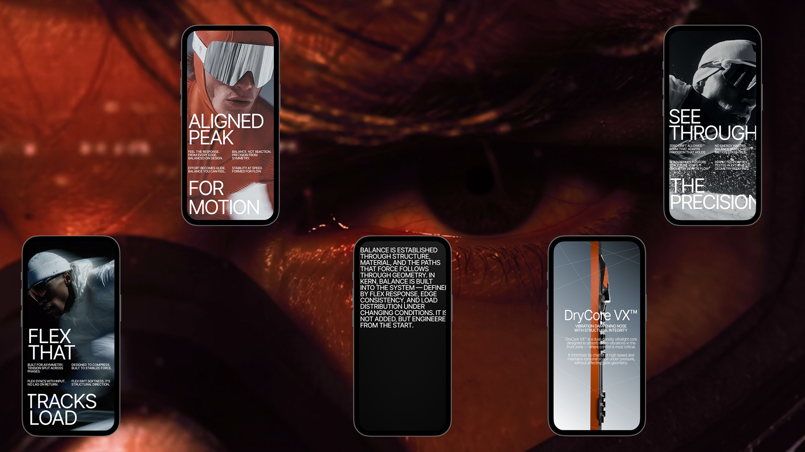

о проекте
KERN — концептуальный бренд гоночных лыж, созданный с нуля для участия в международных дизайн-конкурсах. Задача — передать через интерфейс то, что бренд закладывает в продукт: точность, контроль и ощущение трассы с первого поворота.
моя роль
Единственный автор проекта. Полный цикл от идеи до публикации.
концепция бренда, философия и позиционирование, конкурентный анализ лыжной индустрии и digital-референсов, копирайтинг, Midjourney-контент и 3D-визуализация продукта, дизайн сайта, адаптивы, UI Kit и передача в сборку на TapTop


Характер бренда и мудборд
Я выделила четыре ключевые ассоциации бренда и перевела каждую в конкретный визуальный приём. Вместе они формируют ядро дизайн-системы KERN: скорость, минимализм, точность и инженерия.
Из широкого поля я отфильтровала якорные образы — те, которые точнее всего передают характер KERN: контраст, движение, инженерная эстетика.


Референсы по композиции
Каждый экран сайта я декомпозировала отдельно: подобрала композиционные референсы под конкретную задачу секции — от прелоадера до футера.

Слои ULTRA-UI
ULTRA-UI — моя авторская методология: я раскладываю дизайн на слои — типографика, сетка, цвет, анимация, графика — и для каждого определяю, какой визуальный приём передаёт нужную эмоцию.

Дизайн продукта
Прежде чем моделировать лыжу, я собрала визуальные референсы по конструкции: крепления, изгибы, материалы, детализация стыков. Фокус — на продуктах, где инженерная форма сама становится визуальным языком.
На основе референсов я собрала 3D-модель лыжи в Blender — с точной геометрией креплений, профилем изгиба и конструктивными деталями. Затем настроила текстуры, свет и анимацию взрыв-схемы.

Давайте посмотрим теперь на сам сайт!
Камера стартует с крупного плана лица лыжника в очках, приближается к глазу, проникает через зрачок — и зритель оказывается внутри инженерной системы KERN.
награды
Сайт KERN получил признание семи международных платформ, оценивающих качество веб-дизайна, визуального сторителлинга и фронтенд-реализации.



Посмотреть сайт: kern.taptop.site